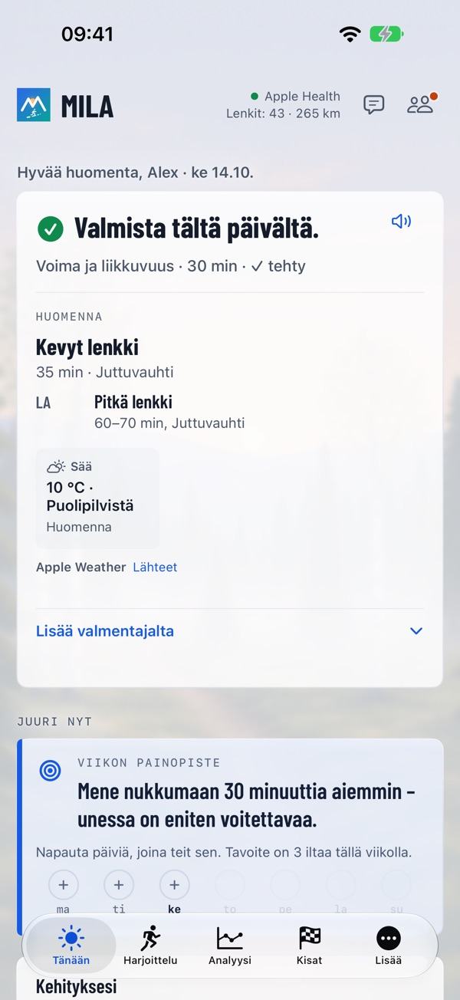
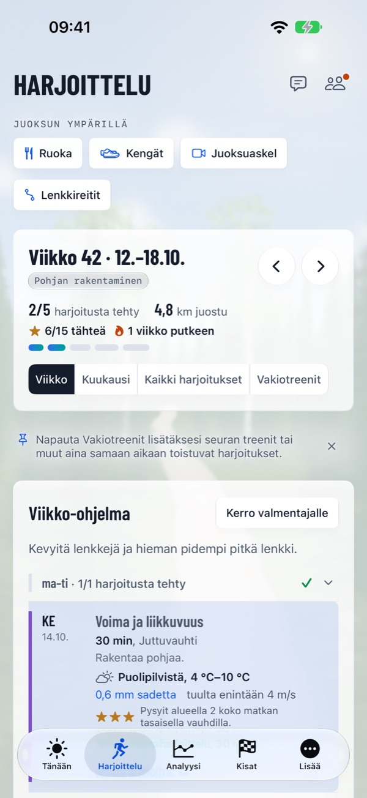
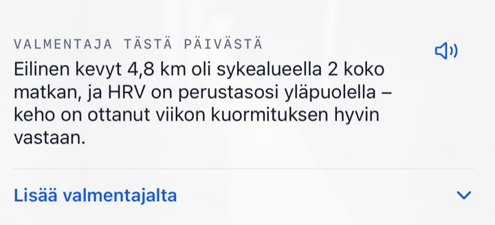

Oikea harjoitus. Oikea päivä.
Valmentaja, joka lukee kehoasi ja elämääsi joka aamu – maaliin asti.
Mila lähtee omista tiedoistasi, tämän päivän kunnostasi ja tavoitteestasi. Joka aamu ensin tulee valmentajan arvio – valmis, tavallinen päivä tai ota rauhallisesti – ja sitten päivän harjoitus sellaisena kuin se nyt on: harjoittelua, joka sopii elämääsi, vahvistaa sinua kohti tavoitettasi eikä koskaan pyydä sinua tulkitsemaan yhtäkään kaaviota.



Enemmän treenistä, vähemmän pähkäiltävää
Oikea harjoitus joka päivä – sen mukaan, miltä sinusta tuntuu ja miltä arkesi näyttää.
Miksi Mila on erilainen
Kellosi mittaa. Mila tekee siitä sinulle oikean harjoituksen.
Mila-tunnelma
Oikea harjoitus. Oikea päivä. Kaikki Milassa lähtee siitä.
Valmentaja napautuksen päässä
Joka aamu saat valmentajan arvion ja päivän harjoituksen, parhaan ajan juosta ja vinkin siitä, mitä pukea päälle sään mukaan. Päivän huomion voit kuunnella ääneen luettuna. Kun elämä muuttuu, kerro valmentajalle omin sanoin, ja kun jokin mietityttää, kysy valmentajalta – vastaukset tuntevat tietosi. Viikon päättyessä – sunnuntai-iltana tai viimeistään maanantaiaamuna – tulevat viikkokatsaus ja seuraavan viikon ohjelma.

Mila ranteessa
Milan Apple Watch -appi näyttää päiväsi, tallentaa kisasi ja kysyy, miten harjoitus meni. Muut kellot toimivat Apple Healthin kautta.
Kaikki, mitä juoksija tarvitsee
Ensimmäisestä rauhallisesta lenkistä kisapäivään.
Viikko-ohjelma ja analyysi
Viikko-ohjelma lihaskuntoharjoituksineen ja harjoituksineen, joita voit siirtää. Juoksun jälkeen suunniteltu vs. toteutunut, reitti vauhdin mukaan väritettynä ja samankaltaiset juoksut. Omat kuviosi, Verrattuna, Ennätykset ajan mittaan ja Juoksuvuoteni.
Milan kisakalenteri
Viralliset kisat kartan, korkeusprofiilin, juomapisteiden ja järjestäjän linkin kanssa – tai lataa reitti itse (GPX, KML, TCX tai ZIP). Jokaisella kalenterin kisalla on myös oma sivunsa: milacoach.app/fi/kisat.
Ennen kisaa ja sen jälkeen
Ennuste, korkeusprofiilin mukainen vauhtisuunnitelma, energiasuunnitelma, Olenko valmis?, kisaopas ja kisa-aamu. Jälkeenpäin kilometriajat suunnitelmaan verrattuna, valmentajan kisa-analyysi ja virallinen tuloksesi.
Juoksuaskel
Kuvaa appissa tai valitse video. Vain pysäytyskuvat lähetetään, kasvot sumennettuina, eikä video koskaan lähde iPhonesta. Valmentaja antaa havaintoja ja harjoitteita, punoo ne ohjelmaasi ja seuraa niitä ajan mittaan.
Kengät
Valmentaja arvioi, kauanko kukin kenkä kestää sinulla – suunnilleen kuinka monta kilometriä ja viikkoa sinun vauhdillasi. Tuo kenkälokisi kuvasta tai CSV-tiedostosta.
Ruoka
Kuvaa tai kuvaile ateria, niin valmentaja arvioi sen ja liittää sen harjoitteluusi. Korjaa omin sanoin, näytä ilman lukuja tai kirjaa Sirillä.
Jaa
Kuvia juoksuista ja kisoista paikan mukaisella Mila-tyylisellä taustalla, tekstiehdotuksella ja valmentajan lauseella.
Kalenterissa
Valmentajan harjoitukset valitsemaasi kalenteriin, siihen aikaan, kun sää on paras.
Alkuun muutamassa minuutissa
Kerro valmentajalle itsestäsi ja tavoitteestasi, katso, miten valmentaja ymmärsi sinut, ja saat ensimmäisen viikkosi. Kokeile Mila Coachia viikon ilmaiseksi.
Toimii kellosi kanssa
Mila lukee juoksusi Apple Healthista, joten et tarvitse tiettyä kelloa.
Tietosi pysyvät sinun
Apple Healthin tiedot luetaan iPhonessasi; yhteenveto menee valmentajalle suostumuksesi jälkeen, yhdessä sen kanssa, mitä yhdistät tai lähetät (yhdistetty kellopalvelu, ateriakuvat, kuvat kenkälokistasi, pysäytyskuvat juoksuaskelvideoista). Tilisi tallennetaan EU:ssa (Irlanti). Valmentajan tekstit kirjoittaa ulkoinen tekoälypalvelu Yhdysvalloissa EU:n vakiosopimuslausekkeiden mukaisesti. Mila ei koskaan myy tietojasi eikä käytä niitä mainontaan, ja voit poistaa tilisi ja kaiken sen sisällön milloin tahansa. Mila antaa yleisiä harjoitteluneuvoja, ei lääketieteellisiä neuvoja.